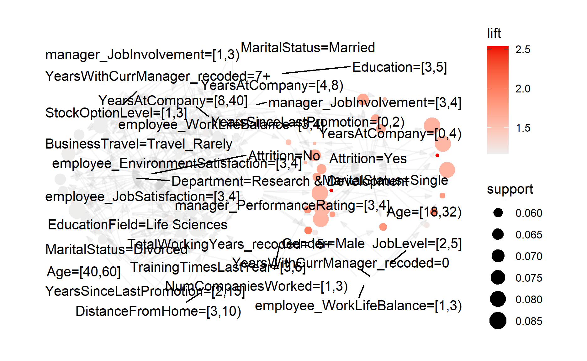

Recently while surfing the net, I happened to come across this employee attrition dataset from Kaggle.
This has sparked my interest in understanding how we could perform rule mining to mine hidden relationships.

Photo by Joshua Miranda from Pexels
Market Basket Analysis
In my previous post on clustering, I have briefly touched on the definition of association.
Market basket analysis is used in discovering how the different items in the dataset are related to one another.
This is commonly used in the retail sector to help companies to identify upsell and cross-sell opportunities.
For example, the common example used in illustrating this technique is how the sales of beer and the sales of diapers are correlated in the supermarket (Swoyer 2016). This has sparked the discussion on why the sales of these two different products are correlated.
Application for Market Basket Analysis in Insurance
Meanwhile, this technique can also be used in the insurance context as well.
For instance, we could apply this technique in detecting the common characteristics of high churners. It also can be used to understand the profiles of customers with the high claim amounts.
Apart from that, this would allow the insures to formulate different customer strategies to target different customer segments.
For example, insurers could think of ways to win back their profitable customers that have recently churned their policies or even strategies to reduce the churn rate for their profitable segments.
Similar to clustering, it is always good to think about how we will be using the results from the rule mining.
Before jumping into the analysis, lets take a look at the definition of some of the key metrics under market basket analysis.
Support
Support refers to the fraction of transactions that contain both items A and B.
Support tells us about the frequency of an item or a combination of items bought (Ahamed 2021).
\(Support = \frac{freq(A, B)}{N}\)
Confidence
Confidence tells us how frequently items A and B are bought together (Ahamed 2021).
\(Confidence = \frac{freq(A, B)}{freq(A)}\)
In other words, confidence looks at the conditional probability of B being bought given that A is bought as well.
Lift
Lift measures the strength of association rules over the random occurrence of A and B (Ahamed 2021).
\(Lift = \frac{Support(A,B)}{Support(A)*Support(B)}\)
In other words, lift measures the strength of the rules. The higher the lift, the stronger the association rules.
Nevertheless, lets start with the demonstration of market basket analysis!
Demonstration
In this demonstration, I will be using a Kaggle dataset on the employee resignation dataset.
Photo by Anna Shvets from Pexels
I will be using the following datasets to perform association rule mining:
General data: the main dataset which contains the info on the employees, including whether the employees have resigned from the company
Employee survey data
Manager survey data
Setup the environment
First, I will call the relevant packages for the analysis later.
packages = c('tidyverse', 'arules', 'arulesViz', 'igraph', 'visNetwork')
for (p in packages){
if(!require(p, character.only = T)){
install.packages(p)
}
library(p,character.only = T)
}
I will be following R packages for the following purposes:
arulespackage: Mine association rules in the dataarulesVizpackage: Visualizing the aossication rulesigraphpackage: Visualize the networkvisNetworkpackage: Allow interactivity when visualizing the network
Import the data
Next, I will import the data into the environment.
df_main <- read_csv("data/general_data.csv") %>%
select(-c(EmployeeCount,
Over18,
StandardHours))
As EmployeeCount, Over18, and StandardHours only contain one single value, I will remove these variables before mining the rules.
As we are not told whether the employee ID shown in the survey belongs to the employees or managers, hence I will assume the employee ID shown in both survey data belong to the employees.
Next, I will join the different datasets together through left_join junction.
df <- df_main %>%
left_join(df_employee, by = "EmployeeID") %>%
left_join(df_manager, by = "EmployeeID")
I will also group some categories with relatively low counts under YearsWithCurrManager and TotalWorkingYears as separate categories.
df_1 <- df %>%
mutate(YearsWithCurrManager_recoded = case_when(YearsWithCurrManager > 7 ~ "7+",
TRUE ~ as.character(YearsWithCurrManager)),
TotalWorkingYears_recoded = case_when(TotalWorkingYears > 15 ~ "15+",
TRUE ~ as.character(TotalWorkingYears))) %>%
select(-c(YearsWithCurrManager,
TotalWorkingYears))
Find the association rules
Once the data is processed, we will proceed to mine the association rules within the dataset.
Over here, I will be using apriori function to perform the task.
In the parameters, I have indicated the following:
Min
supportshould be 0.055Min
confidenceshould be 0.1I would mine the rules from the data by indicating the target as
rules
As I am also interested in how the different attributes of the employees affect their attrition, I will perform what is known as target rules mining by specifying the rules I am interested in.
Also, in general, we are interested in the rules that have the relatively stronger association. With that, I will filter out the rules with lift below a specified amount.
rules_sub <- subset(rules, lift > 1.16)
Then I will sort the rules in a descending manner.
rules_sub <- sort(rules_sub, by = "lift", decreasing = TRUE)
arulesViz package contains inspectDT function that allows the users to illustrate the rules in interactive data manner.
inspectDT(rules_sub)
Visualisation
To make it easier to understand the rules, we could plot out the rules in graphic format.
Static Graph
plot function from arulesViz package could be used to illustrate the rules.
According to the documentation page, the plot function supports different plotting engines, including ggplot, base and so on.
If we dont indicate the engine, the default plotting engine will be ggplot.
static_graph_ggplot <- plot(rules_sub,
method = "graph")
static_graph_ggplot

Over here, I will plot the rules by using igraph engine. This would allow us to visualize the rules in a static plot.
static_graph_igraph <- plot(rules_sub,
method = "graph",
engine = "igraph")
Interactive Graph
One issue with the static graph is that graph becomes very cluttered when there are too many rules.
To resolve this, we could either reduce the number of rules to be illustrated or plot an interactive graph that allows us to zoom, highlight or filter the graphs.
To plot the interactive graph, we could either use the plot function from arulesViz package or visNetwork function from visNetwork package.
Method 1: Use plot function
Method 2: Use visNetwork function
The interesting thing about visNetwork is that it allows us to pass additional arguments to further define the nodes and edges (eg. the value of the mode, the color of the edge etc).
To do so, I will convert the static igraph object into a list by using as_data_frame function from igraph package as shown below.
int_graph <- as_data_frame(static_graph_igraph,
what = "both")
I have also specified both under the what argument so that the object would contain both edges and vertices.
class(int_graph)
[1] "list"Once that is done, we can pull the necessary info from the list and form a data frame by using data.frame function as shown below.
nodes <- data.frame(id = int_graph$vertices$name,
value = int_graph$vertices$lift,
color.background = int_graph$vertices$support,
int_graph$vertices)
edges <- data.frame(int_graph$edges)
Then, the created data frame can be passed into visNetwork function.
The cool thing about such graphs is we could interact with the graph, which is something we couldnt do on the static graph.
If we were to highlight the nodes associated with attrition = yes, below are the characteristics of employees with relatively higher attrition:
They tend to be younger, i.e.within the age of 18 - 32
The year of service in the company tend to be shorter as well, i.e.within 0 - 4 years in the company
- As a result, the years under their current manager and the year since the last promotion tends to be the shortest among all
Strangely enough, this group of employees also have a rather good performance rating from their manager since their performance rating is between 3 and 4
- According to the data dictionary, the performance ratings of 3 and 4 refer to excellent and outstanding

With the insights gathered, the HR staff could gather more insights on the reasons for the relatively higher attrition of the younger staff.
This would allow the company to have a more targeted approach to resolve the issues faced by different segments of employees, improving the overall workplace staff retention.
Conclusion
Thats all for the day!
Thanks for reading the post until the end.
Feel free to contact me through email or LinkedIn if you have any suggestions on future topics to share.
Till next time, happy learning!

Photo by krakenimages on Unsplash